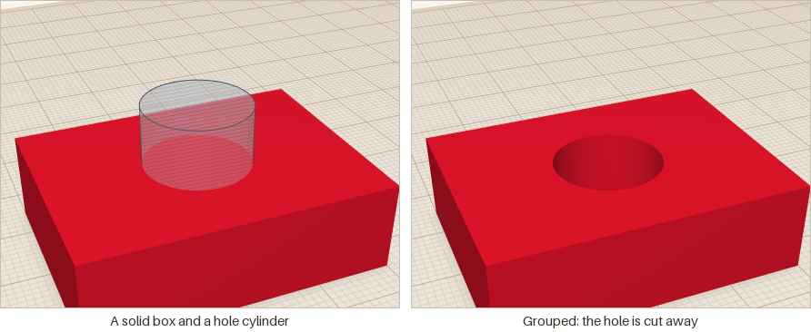
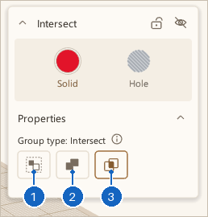
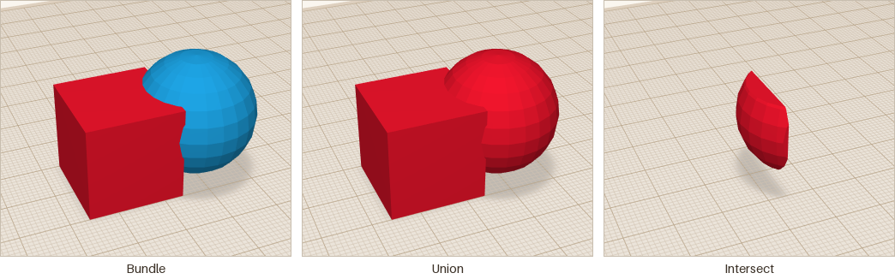
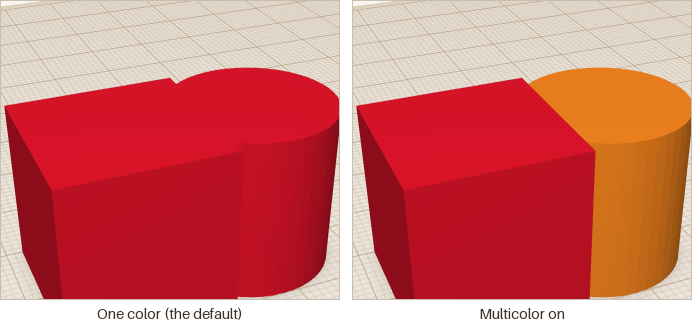

Chapter 5
Holes and groups
Shapes on their own only go so far. Real parts are made by grouping: joining shapes together, and cutting holes out of them. This is the one idea the rest of ScottiCAD is built round.
Cutting a hole
- Put a solid shape on the plate.
- Add a hole shape and move it so it overlaps the solid where you want material removed. (Any shape becomes a hole when you select it and press H.)
- Select both and press Ctrl+G, or click the Union Group button in the toolbar.

The result is one part. The hole only removes material where it overlaps a solid, so make it at least as deep as the cut you want. A hole that sticks out of the top or bottom of the solid does no harm.
A group can hold as many solids and holes as you like. Every solid is joined, and every hole is cut from the result.
Nothing is lost
A group keeps its shapes inside it. Ctrl+Shift+G (or the Ungroup button) takes it apart again, giving back every shape as it was, with its own size, colour and settings. So when a hole turns out to be in the wrong place, ungroup, move it, and group again.
Combining big or detailed shapes can take a moment. ScottiCAD does it in the background and shows "Combining shapes…" at the top of the view; you can keep working meanwhile.
The three kinds of group
A group can combine its shapes in three ways. Select a group and choose in Properties:

- Bundle keeps the shapes separate. They move, turn and resize as one, but nothing is joined or cut, and each keeps its own colour. Use it to keep related parts together. Key: Ctrl+B.
- Union joins the solids into one part and cuts the holes out of it. This is the usual kind. Key: Ctrl+G.
- Intersect keeps only the material that every shape shares: the place where they all overlap.

You can switch a group between the three at any time.
Groups inside groups
A group is a shape like any other, so it can go in another group. This is how more complicated parts are built up:
- Make a detail, such as a mounting boss with its screw hole, as one group. Then copy it to each corner and group the copies with the plate.
- Holes inside a group only cut that group. They don't reach out and cut the shapes around it.
- A whole group can be a hole. Select it and press H. This is how to cut a shape that itself needed grouping to make, such as a cross made of two boxes.
Colour in a group
A union is a single part, so by default it takes a single colour. Click the Solid disc to choose it.
To keep each shape's own colour on the surfaces it contributed, turn Multicolor on in the colour picker.

A multicolour group exports to 3MF as one part per colour, ready for a multi-material printer, or for a filament change part way up. A bundle always keeps its shapes' colours, since nothing in it is joined.
Tips
- Overlap, don't just touch. Let solids that should join overlap a little. Shapes that only touch along a face or an edge may print as separate pieces.
- Make holes longer than they need to be. A hole exactly as deep as the wall can leave a paper-thin skin. Let it poke through.
- Group in stages. Build each detail as its own small group, check it, then group the details together. A mistake is easier to find, and ungrouping takes you back one stage at a time.